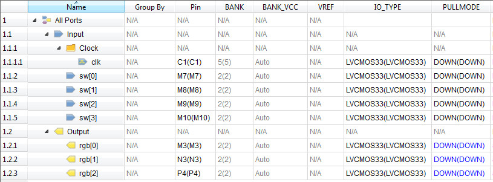
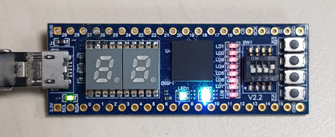

Lattice MXO2-4000HC >> V2.2 >> Verilog
Parallel
參考資訊：
1. basic
程式如下：
module main(clk, sw, rgb);
input clk;
input [3:0] sw;
output reg [2:0] rgb;
reg [23:0] clk_cnt;
reg [4:0] clk_div;
initial begin
rgb = 0;
clk_cnt = 0;
clk_div = 1;
end
always @(posedge clk) begin
clk_cnt = clk_cnt + 1;
if (clk_cnt > (12000000 / clk_div)) begin
clk_cnt = 0;
rgb = rgb + 1;
end
end
always @(sw) begin
clk_div = sw + 1;
end
endmodule
當觸發條件成立，兩個各別的副程式可以同時執行，這也是FPGA平行處理的觀念，因為它的形式是硬體電路
腳位

完成
